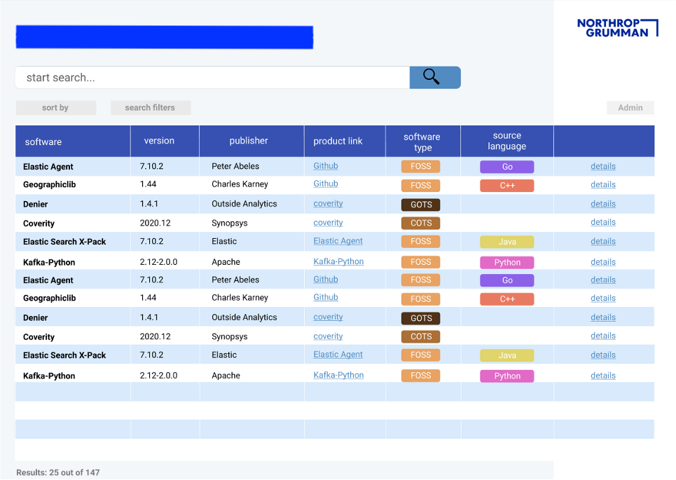

Northrop Grumman - Software Engineering Intern
June 2021 - August 2021
- Researched best tools to integrate into the DevSecOps pipeline from newly approved list.
- Increased engineer productivity by developing an automation script in Bash to improve Docker image download process.
- Designed and developed a web GUI that lists approved software libraries and tools in a user-friendly manner (tech stack: Flask, Python, HTML, CSS).
- Gained exposure to the DevSecOps pipeline, Kubernetes, and Docker.
The team's current way of displaying the data was through a spreadsheet, so I pitched I solution to move all the data to a database
and display it through an web GUI to align with the company's digital transformation efforts. The image below is a sample of the design to
display database entries. My solution was approved and began development after the completion of my internship.
